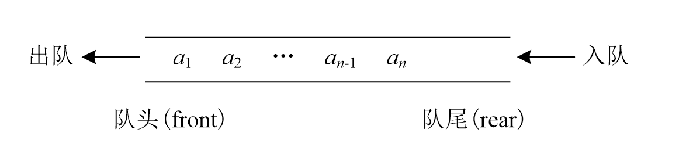

队列
特点
队列是先进先出（First In First Out）的线性表，简称FIFO表。

在C++中有库函数帮助实现，但为了更加直观，我用c语言进行说明。
例子
快速排序非递归算法实现
快速排序的了解可以到我另一个帖子[[排序算法]]中看看。
这里本质上是通过在队列中用入队列和出队列来模拟函数递归中的参数传递，每次传入的参数包括需要排序区间的头和尾。
我是通过线性表来实现队列操作，当然选择用数组也是可以实现的。
代码
1
2
3
4
5
6
7
8
9
10
11
12
13
14
15
16
17
18
19
20
21
22
23
24
25
26
27
28
29
30
31
32
33
34
35
36
37
38
39
40
41
42
43
44
45
46
47
48
49
50
51
52
53
54
55
56
57
58
59
60
61
62
63
64
65
66
67
68
69
70
71
72
73
74
75
| #include<stdio.h>
#include<stdlib.h>
#include<time.h>
int p[10000009];
struct queue{
int*head;
int*tail;
struct queue* next;
};
void random(int n)
{
srand(time(NULL));
for (int i = 1; i <= n; i++) {
p[i-1] = rand() % 100;
}
}
void add(struct queue**ls,int*h,int*t){
if(t-h<1)return;
struct queue*addin;
addin=(struct queue*)malloc(sizeof(struct queue));
(*ls)->next=addin;
addin->next=NULL;
addin->head=h;
addin->tail=t;
*ls=addin;
}
void del(struct queue**ls){
struct queue*tmp=(*ls)->next;
free(*ls);
*ls=tmp;
}
int main()
{
int n;
scanf("%d",&n);
random(n);
struct queue*ltail;
ltail=(struct queue*)malloc(sizeof(struct queue));
ltail->head=p;
ltail->tail=p+n-1;
ltail->next=NULL;
struct queue*lhead=ltail;
while(lhead!=NULL) {
int *i = lhead->head, *j = lhead->tail;
int std = *i;
i++;
while (i <= j) {
int f=1;
while (f && *i < std) {
i++;
if (i > j)f = 0;
}
while (f&&*j>=std){
j--;
if(i > j)f=0;
}
if(f){
int tmp=*i;*i=*j;*j=tmp;
}
else {
int tmp=*j;*j=std;*lhead->head=tmp;
}
}
add(<ail,lhead->head,j);
add(<ail,i,lhead->tail);
del(&lhead);
}
for(int i=0;i<n;i++){
printf("%d ",p[i]);
}
}
|